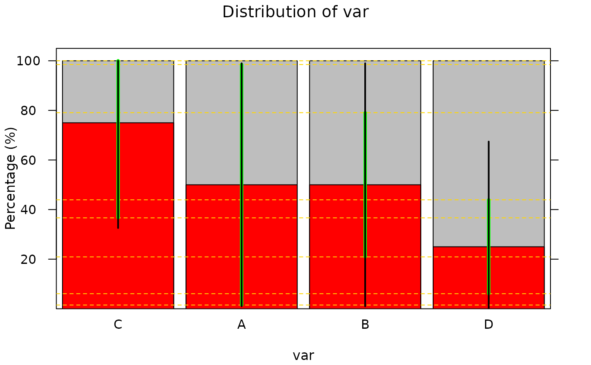

Create a multi-response factor variable
mfactor(x, levels = names(x), indicator = NULL, na.value = 0L)
| x | a dataframe of columns for each response option |
|---|---|
| levels | vector of level names (defaults to names of |
| indicator | if values in |
| na.value | usually, missing values in some columns will be treated
as |
A vector of class mfactor where each item is a character
string of zeros and ones indicating, in order,
the response value associated with that row.
Tom Elliott
mat <- data.frame( A = c(1, 0, 0, 1), B = c(1, 0, 1, 0), C = c(0, 1, 1, 1), D = c(0, 0, 1, 0) ) (var <- mfactor(mat)) #> [1] [A, B] [C] [B, C, D] [A, C] # can plot, either on its own or in a data.frame plot(var) #> Warning: Max error betw. approx. and true moe is -17%  data <- data.frame(var = var) plot(var ~ 1, data = data) #> Warning: Max error betw. approx. and true moe is -17%